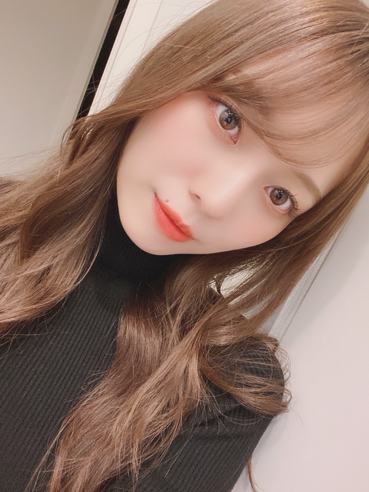
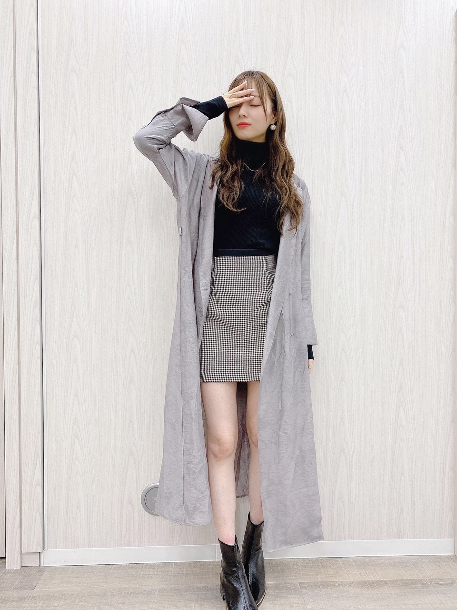
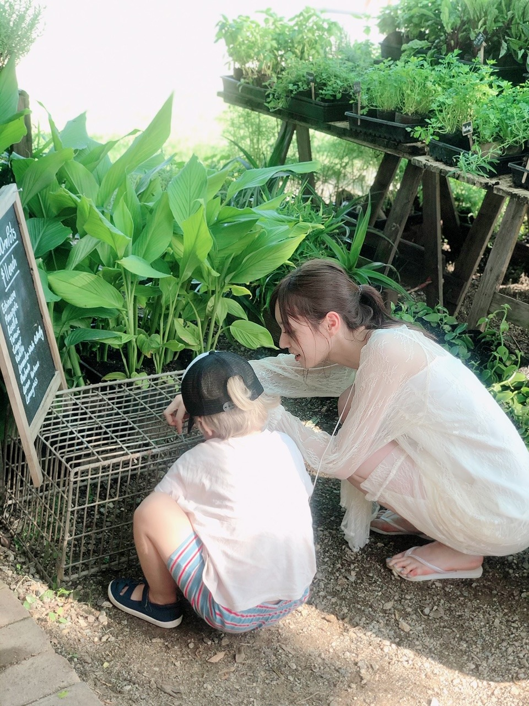
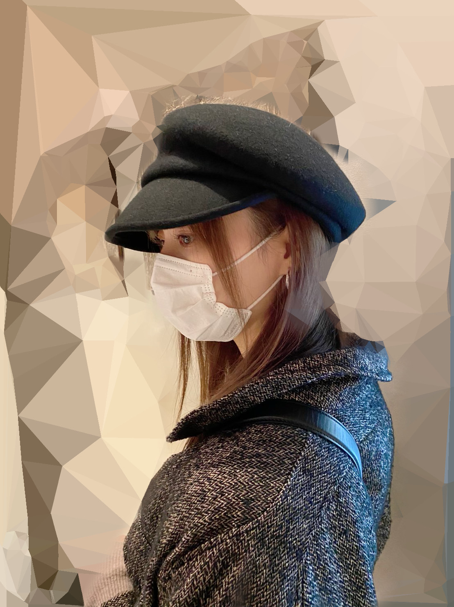

まだまだ先だと思ってたスケジュールも目前

気づいたらお久しぶりになってしまいました、、
涼しくなった〜！と思ったら
急激に冷え込んできましたね。
気づけば金木犀の香りも
いつの間にかいなくなってる。
また一年後かあ。儚い。
最近はですね〜、
趣味が欲しくて色んなものを見るようにしてみたり。
でも手をつける所までは中々。
多趣味な人になりたいなあ。
中途半端になってしまってもいい気持ちを持って挑めばきっと楽なんだろうけど
中々、ねえ、、
興味は持つのだけどね。
皆様の趣味ってなんですか？
ぜひ教えてくださいませ。

服を着るのが楽しいよ〜！！
秋冬たまらないよ、、選ぶのも楽しい。
何だかんだやっぱり
ベージュやら黒やらブラウンやらグレーやら
落ち着いたトーンが好きだけど
挑戦してみようと思って色々、手出してみてます。
グリーンのニットに
鮮やかな水色のシャツゲットしたよ〜☀︎
どんな服が好きです？
今日質問しすぎ？( ˙-˙ )
あと最近は
ドライアプリコットにハマってる。
気づけば口には混んでる、、沼
オンラインミート&グリート
とっても楽しくやらせて頂いてます！！
テレビ電話してる感覚！
直接会うより
こっちの方が緊張するって方も多くて
すごく不思議だね〜
お家からだったり、
プライベートな空間からっていうのが
新鮮で慣れなくて緊張するのかなあ( ˙-˙ )
部屋を飾り付けしてくれてたり
写真集おめでとうのケーキ用意してくれたり
写真集のお気に入りページ見せてくれたり
本当にありがとうございます、、嬉しいです。
部屋着でラフに参加してくれてもいいし
寝起きでも全然ありだし（笑）、
やりやすいように、オンラインならではの楽しみ方で一緒に楽しめたらなと思います☀︎
そして追加開催が決定しました！
私は
１１／７ （土）と１１／１５（日）に
参加しますのでぜひ☀︎
皆様推しメンの日にちをしっかりチェックして
お間違えのないように︎︎︎︎✌︎
詳しくはこちらから↓
http://dlvr.it/Rk1L1p
写真集買ったよ報告
本当にありがとうございます！！
もうすぐ発売から１ヶ月かあ。
皆様が喜んでくださるのが本当に嬉しいです、、
毎日眺めてね☀︎（笑）
私は毎日、撮影に行った日のオフショットたちを
眺めてしまうよ〜〜
公式TwitterやInstagramも
まだまだ投稿頑張っておりますので
写真集の事は毎日頭にありまする。幸せだなあ。
写真集に納められなかった写真たちも
たっくさんあるのです、、
写真集をゲットしてくださった皆様は
プレゼント応募が出来ますので、ぜひ❤︎
私の選んだアザーカット集もございますので
お楽しみに〜〜！

これは現地の男の子と︎︎︎︎✌︎
可愛かったなあ〜
網の中にオモチャが入っちゃったみたいで
一緒に取ろうと格闘してる最中（笑）！
最終的にパパさんが取ってくれて
拍手が起こりました！
パパさんさすがでした！☀︎
絶賛発売中の1st写真集「夢の近く」
引き続きよろしくお願い致します❤︎
髪の毛も肌も
乾燥が止まらない季節、、
ネイルオイルも手放せない、、
こまめにケアしてあげようと思います。

ぼーっと梅澤。
謎の写真。
では。
また更新します。
たくさん食べてたくさん寝て、
周りの人とたくさん笑って
リフレッシュして過ごしてね☀︎
深呼吸多めにしながら
毎日心穏やかに過ごすのが目標です〜
Original：https://www.nogizaka46.com/s/n46/diary/detail/58480?ima=4936&cd=MEMBER